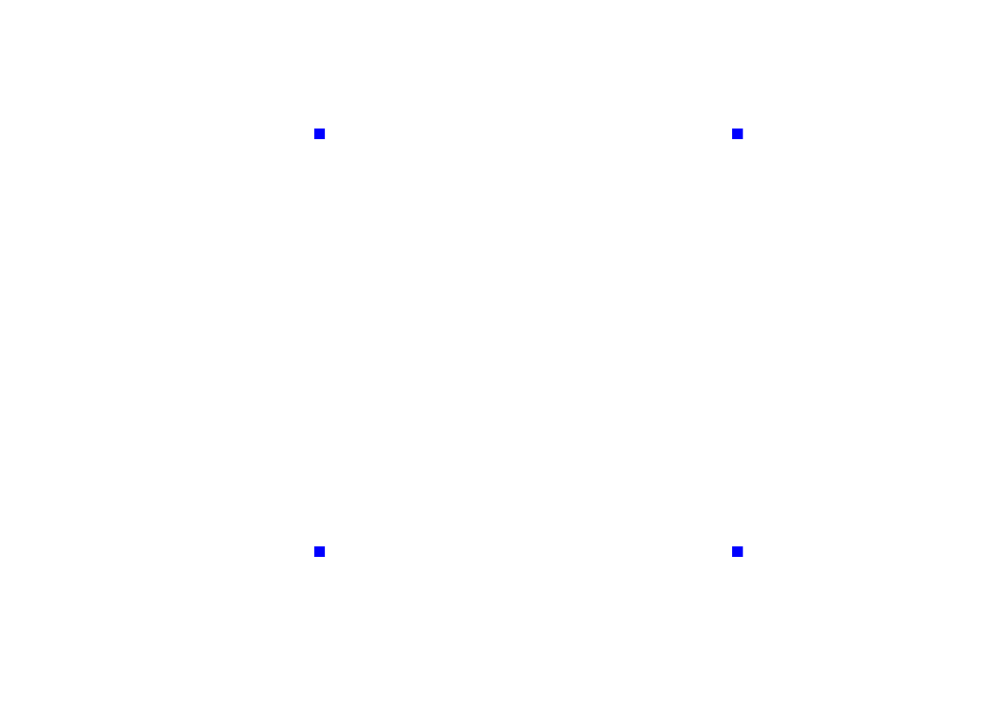
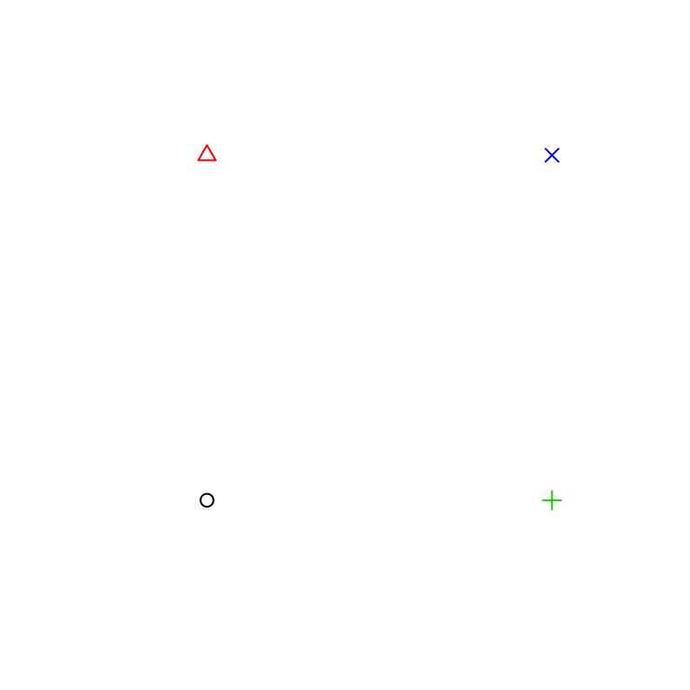
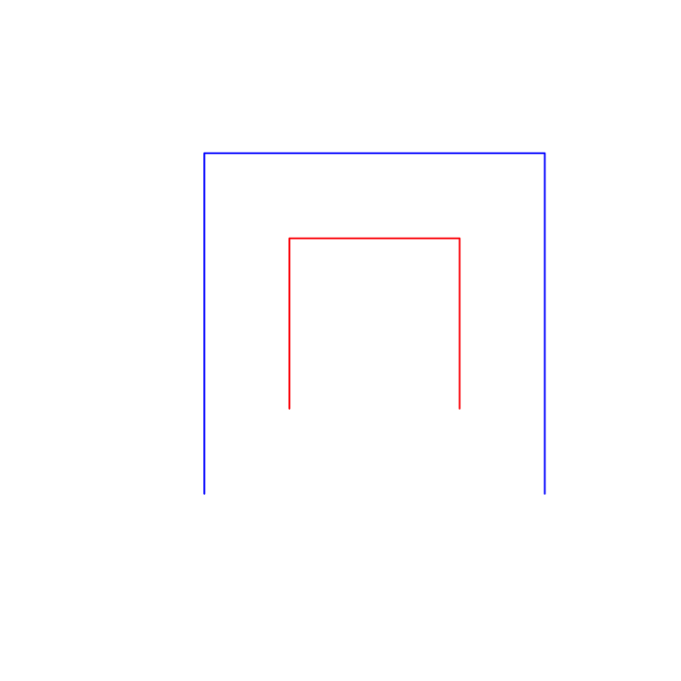
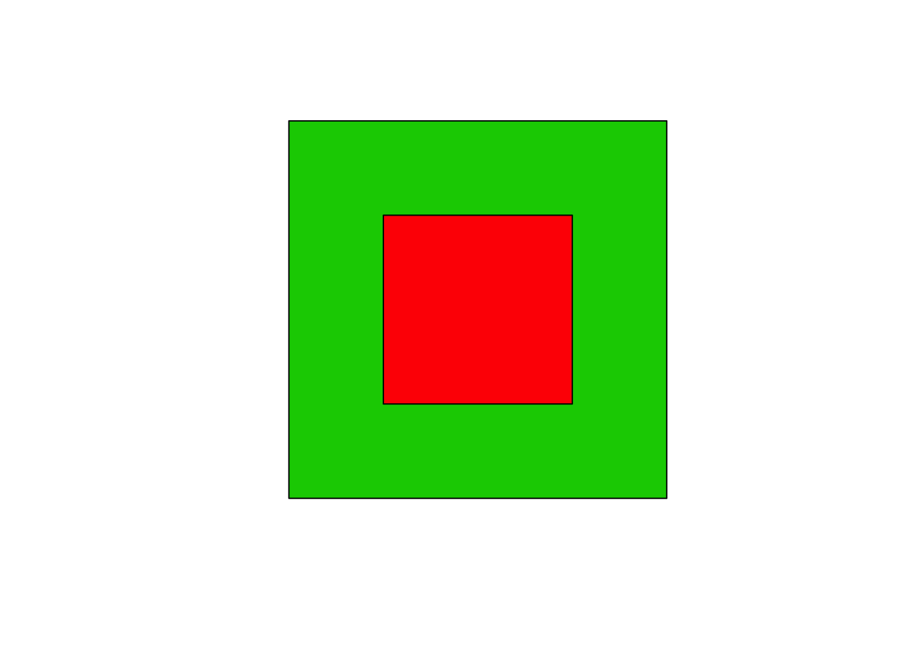
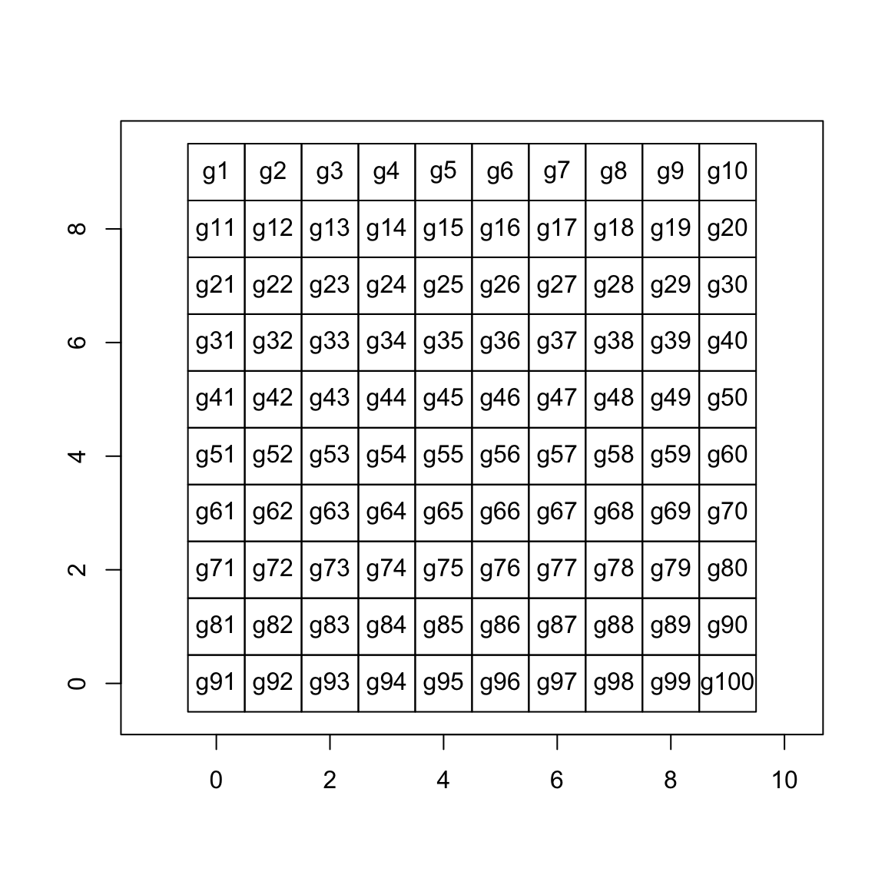

proj4string (from the PROJ.4 library)proj - projectiondatum - defines origin and direction of axesellps - model for the shape of the earthLatitude/longitde for referencing location on a 3D model of the Earth’s surface (typically ellipsoidal).
# google earth - WGS84 (World Geodesic System 1984) lat-long
CRS("+init=epsg:4326")
## CRS arguments:
## +init=epsg:4326 +proj=longlat +datum=WGS84 +no_defs +ellps=WGS84
## +towgs84=0,0,0# US federal agencies - NAD83 (North American Datum 1983)
CRS("+init=epsg:4269")
## CRS arguments:
## +init=epsg:4269 +proj=longlat +datum=NAD83 +no_defs +ellps=GRS80
## +towgs84=0,0,0Easting/Northing for referencing location on 2D representations of the Earth’s surface.
Example projections: Mercator, UTM, Robinson, Lambert, Sinusoidal, Robinson, Albers.
# google maps, open street map
CRS("+init=epsg:3857")
## CRS arguments:
## +init=epsg:3857 +proj=merc +a=6378137 +b=6378137 +lat_ts=0.0
## +lon_0=0.0 +x_0=0.0 +y_0=0 +k=1.0 +units=m +nadgrids=@null
## +no_defs# OSGB36 (Ordnance Survey Great Britain 1936) easting / northing
CRS("+init=epsg:27700")
## CRS arguments:
## +init=epsg:27700 +proj=tmerc +lat_0=49 +lon_0=-2 +k=0.9996012717
## +x_0=400000 +y_0=-100000 +datum=OSGB36 +units=m +no_defs
## +ellps=airy
## +towgs84=446.448,-125.157,542.060,0.1502,0.2470,0.8421,-20.4894# utm 30 (UK?)
CRS("+proj=utm +zone=30")
## CRS arguments: +proj=utm +zone=30 +ellps=WGS84# utm 48 (Cambidia?)
CRS("+proj=utm +zone=48")
## CRS arguments: +proj=utm +zone=48 +ellps=WGS84https://www.rspatial.org/spatial/6-crs.html
https://www.nceas.ucsb.edu/~frazier/RSpatialGuides/OverviewCoordinateReferenceSystems.pdf
https://geocompr.robinlovelace.net/spatial-class.html#crs-intro
coords = cbind(x = c(0,0,1,1),
y = c(0,1,0,1))
row.names(coords) = letters[1:4]
spoints = SpatialPoints(coords = coords,
proj4string = CRS("+init=epsg:4227"))slotNames(spoints)
## [1] "coords" "bbox" "proj4string"spoints@coords
## x y
## a 0 0
## b 0 1
## c 1 0
## d 1 1spoints@bbox
## min max
## x 0 1
## y 0 1spoints@proj4string
## CRS arguments:
## +init=epsg:4227 +proj=longlat +a=6378249.2 +b=6356515
## +towgs84=-190.421,8.532,238.69,0,0,0,0 +no_defssummary(spoints)
## Object of class SpatialPoints
## Coordinates:
## min max
## x 0 1
## y 0 1
## Is projected: FALSE
## proj4string :
## [+init=epsg:4227 +proj=longlat +a=6378249.2 +b=6356515
## +towgs84=-190.421,8.532,238.69,0,0,0,0 +no_defs]
## Number of points: 4plot(spoints, pch = 15, col = "blue", axes = FALSE)
df = data.frame(z = 1:length(spoints))
row.names(df) = row.names(spoints)
spoints_df = SpatialPointsDataFrame(spoints, df)
spoints_df
## coordinates z
## a (0, 0) 1
## b (0, 1) 2
## c (1, 0) 3
## d (1, 1) 4plot(spoints_df,
pch = spoints_df@data$z,
col = spoints_df@data$z,
axes = FALSE)
L1 = Line(cbind(x = c(-1,-1,1,1), y = c(-1,1,1,-1)))
L2 = Line(cbind(x = c(-2,-2,2,2), y = c(-2,2,2,-2)))
Ls1 = Lines(list(L1), ID = "Ls1") # list can contain multiple Line objects
Ls2 = Lines(list(L2), ID = "Ls2") # list can contain multiple Line objects
slines = SpatialLines(LinesList = list(Ls1, Ls2),
proj4string = CRS("+init=epsg:4227"))slotNames(slines)
## [1] "lines" "bbox" "proj4string"Each lines object contains a list of Lines objects
str(slines@lines)
## List of 2
## $ :Formal class 'Lines' [package "sp"] with 2 slots
## .. ..@ Lines:List of 1
## .. .. ..$ :Formal class 'Line' [package "sp"] with 1 slot
## .. .. .. .. ..@ coords: num [1:4, 1:2] -1 -1 1 1 -1 1 1 -1
## .. .. .. .. .. ..- attr(*, "dimnames")=List of 2
## .. .. .. .. .. .. ..$ : NULL
## .. .. .. .. .. .. ..$ : chr [1:2] "x" "y"
## .. ..@ ID : chr "Ls1"
## $ :Formal class 'Lines' [package "sp"] with 2 slots
## .. ..@ Lines:List of 1
## .. .. ..$ :Formal class 'Line' [package "sp"] with 1 slot
## .. .. .. .. ..@ coords: num [1:4, 1:2] -2 -2 2 2 -2 2 2 -2
## .. .. .. .. .. ..- attr(*, "dimnames")=List of 2
## .. .. .. .. .. .. ..$ : NULL
## .. .. .. .. .. .. ..$ : chr [1:2] "x" "y"
## .. ..@ ID : chr "Ls2"slines@bbox
## min max
## x -2 2
## y -2 2slines@proj4string
## CRS arguments:
## +init=epsg:4227 +proj=longlat +a=6378249.2 +b=6356515
## +towgs84=-190.421,8.532,238.69,0,0,0,0 +no_defssummary(slines)
## Object of class SpatialLines
## Coordinates:
## min max
## x -2 2
## y -2 2
## Is projected: FALSE
## proj4string :
## [+init=epsg:4227 +proj=longlat +a=6378249.2 +b=6356515
## +towgs84=-190.421,8.532,238.69,0,0,0,0 +no_defs]plot(slines, col = c("red", "blue"), axes = FALSE)
slotNames(slines@lines[[1]])
## [1] "Lines" "ID"Each Lines object contains a list of Line objects
str(slines@lines[[1]]@Lines)
## List of 1
## $ :Formal class 'Line' [package "sp"] with 1 slot
## .. ..@ coords: num [1:4, 1:2] -1 -1 1 1 -1 1 1 -1
## .. .. ..- attr(*, "dimnames")=List of 2
## .. .. .. ..$ : NULL
## .. .. .. ..$ : chr [1:2] "x" "y"str(slines@lines[[1]]@ID)
## chr "Ls1"slotNames(slines@lines[[1]]@Lines[[1]])
## [1] "coords"slines@lines[[1]]@Lines[[1]]@coords
## x y
## [1,] -1 -1
## [2,] -1 1
## [3,] 1 1
## [4,] 1 -1df = data.frame(z = 1:length(slines))
row.names(df) = row.names(slines)
slines_df = SpatialLinesDataFrame(slines, df)
str(slines_df)
## Formal class 'SpatialLinesDataFrame' [package "sp"] with 4 slots
## ..@ data :'data.frame': 2 obs. of 1 variable:
## .. ..$ z: int [1:2] 1 2
## ..@ lines :List of 2
## .. ..$ :Formal class 'Lines' [package "sp"] with 2 slots
## .. .. .. ..@ Lines:List of 1
## .. .. .. .. ..$ :Formal class 'Line' [package "sp"] with 1 slot
## .. .. .. .. .. .. ..@ coords: num [1:4, 1:2] -1 -1 1 1 -1 1 1 -1
## .. .. .. .. .. .. .. ..- attr(*, "dimnames")=List of 2
## .. .. .. .. .. .. .. .. ..$ : NULL
## .. .. .. .. .. .. .. .. ..$ : chr [1:2] "x" "y"
## .. .. .. ..@ ID : chr "Ls1"
## .. ..$ :Formal class 'Lines' [package "sp"] with 2 slots
## .. .. .. ..@ Lines:List of 1
## .. .. .. .. ..$ :Formal class 'Line' [package "sp"] with 1 slot
## .. .. .. .. .. .. ..@ coords: num [1:4, 1:2] -2 -2 2 2 -2 2 2 -2
## .. .. .. .. .. .. .. ..- attr(*, "dimnames")=List of 2
## .. .. .. .. .. .. .. .. ..$ : NULL
## .. .. .. .. .. .. .. .. ..$ : chr [1:2] "x" "y"
## .. .. .. ..@ ID : chr "Ls2"
## ..@ bbox : num [1:2, 1:2] -2 -2 2 2
## .. ..- attr(*, "dimnames")=List of 2
## .. .. ..$ : chr [1:2] "x" "y"
## .. .. ..$ : chr [1:2] "min" "max"
## ..@ proj4string:Formal class 'CRS' [package "sp"] with 1 slot
## .. .. ..@ projargs: chr "+init=epsg:4227 +proj=longlat +a=6378249.2 +b=6356515 +towgs84=-190.421,8.532,238.69,0,0,0,0 +no_defs"P1 = Polygon(cbind(x = c(-1,-1,1,1), y = c(-1,1,1,-1)))
P2 = Polygon(cbind(x = c(-2,-2,2,2), y = c(-2,2,2,-2)))
Ps1 = Polygons(list(P1), ID = "Ps1") # list can contain multiple Polygon objects
Ps2 = Polygons(list(P2), ID = "Ps2") # list can contain multiple Polygon objects
spoly = SpatialPolygons(Srl = list(Ps1, Ps2),
pO = 2:1,
proj4string = CRS("+init=epsg:4227"))slotNames(spoly)
## [1] "polygons" "plotOrder" "bbox" "proj4string"Each polygons object contains a list of Polygons objects
str(spoly@polygons)
## List of 2
## $ :Formal class 'Polygons' [package "sp"] with 5 slots
## .. ..@ Polygons :List of 1
## .. .. ..$ :Formal class 'Polygon' [package "sp"] with 5 slots
## .. .. .. .. ..@ labpt : num [1:2] 0 0
## .. .. .. .. ..@ area : num 4
## .. .. .. .. ..@ hole : logi FALSE
## .. .. .. .. ..@ ringDir: int 1
## .. .. .. .. ..@ coords : num [1:5, 1:2] -1 -1 1 1 -1 -1 1 1 -1 -1
## .. ..@ plotOrder: int 1
## .. ..@ labpt : num [1:2] 0 0
## .. ..@ ID : chr "Ps1"
## .. ..@ area : num 4
## $ :Formal class 'Polygons' [package "sp"] with 5 slots
## .. ..@ Polygons :List of 1
## .. .. ..$ :Formal class 'Polygon' [package "sp"] with 5 slots
## .. .. .. .. ..@ labpt : num [1:2] 0 0
## .. .. .. .. ..@ area : num 16
## .. .. .. .. ..@ hole : logi FALSE
## .. .. .. .. ..@ ringDir: int 1
## .. .. .. .. ..@ coords : num [1:5, 1:2] -2 -2 2 2 -2 -2 2 2 -2 -2
## .. ..@ plotOrder: int 1
## .. ..@ labpt : num [1:2] 0 0
## .. ..@ ID : chr "Ps2"
## .. ..@ area : num 16spoly@plotOrder
## [1] 2 1spoly@bbox
## min max
## x -2 2
## y -2 2spoly@proj4string
## CRS arguments:
## +init=epsg:4227 +proj=longlat +a=6378249.2 +b=6356515
## +towgs84=-190.421,8.532,238.69,0,0,0,0 +no_defssummary(spoly)
## Object of class SpatialPolygons
## Coordinates:
## min max
## x -2 2
## y -2 2
## Is projected: FALSE
## proj4string :
## [+init=epsg:4227 +proj=longlat +a=6378249.2 +b=6356515
## +towgs84=-190.421,8.532,238.69,0,0,0,0 +no_defs]plot(spoly, col = 2:3, pbg = "white")
slotNames(spoly@polygons[[1]])
## [1] "Polygons" "plotOrder" "labpt" "ID" "area"Each Polygons object contains a list of Polygon objects
str(spoly@polygons[[1]]@Polygons)
## List of 1
## $ :Formal class 'Polygon' [package "sp"] with 5 slots
## .. ..@ labpt : num [1:2] 0 0
## .. ..@ area : num 4
## .. ..@ hole : logi FALSE
## .. ..@ ringDir: int 1
## .. ..@ coords : num [1:5, 1:2] -1 -1 1 1 -1 -1 1 1 -1 -1spoly@polygons[[1]]@plotOrder
## [1] 1TODO: explain labpt
spoly@polygons[[1]]@labpt
## [1] 0 0spoly@polygons[[1]]@ID
## [1] "Ps1"spoly@polygons[[1]]@area
## [1] 4slotNames(spoly@polygons[[1]]@Polygons[[1]])
## [1] "labpt" "area" "hole" "ringDir" "coords"str(spoly@polygons[[1]]@Polygons)
## List of 1
## $ :Formal class 'Polygon' [package "sp"] with 5 slots
## .. ..@ labpt : num [1:2] 0 0
## .. ..@ area : num 4
## .. ..@ hole : logi FALSE
## .. ..@ ringDir: int 1
## .. ..@ coords : num [1:5, 1:2] -1 -1 1 1 -1 -1 1 1 -1 -1TODO: explain labpt
spoly@polygons[[1]]@Polygons[[1]]@labpt
## [1] 0 0spoly@polygons[[1]]@Polygons[[1]]@area
## [1] 4TODO: explain hole
spoly@polygons[[1]]@Polygons[[1]]@hole
## [1] FALSEspoly@polygons[[1]]@Polygons[[1]]@ringDir
## [1] 1spoly@polygons[[1]]@Polygons[[1]]@coords
## [,1] [,2]
## [1,] -1 -1
## [2,] -1 1
## [3,] 1 1
## [4,] 1 -1
## [5,] -1 -1TODO
TODO
sgrid <- GridTopology(c(0,0), c(1,1), c(10,10))
sgrid_poly <- as(sgrid, "SpatialPolygons")
plot(sgrid_poly, axes = TRUE)
text(coordinates(sgrid_poly), labels = row.names(sgrid_poly))